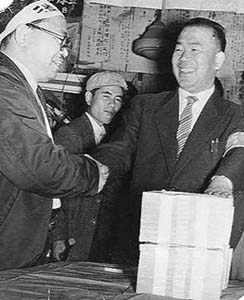

三池労組宮川組合長
（提供写真）
昭和35年4月25日、三池労組本部にて総評岩井事務局長からカンパ金1億円を受け取る三池労組 宮川組合長（左）。
その宮川さんは、三池争議終結から3年後の昭和38年年8月、争議の責任を問われて懲戒解雇となり、1979年3月17日病死。 享年62歳だった。宮川さんは「他の組合幹部のように議員になることもなく、関係団体に天下ることもなく、晩酌にもことか いていた貧乏」（鎌田慧著「去るも地獄残るも地獄」より）な生活だったという。

BACK
NEXT